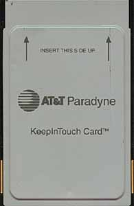
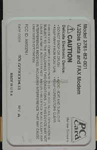
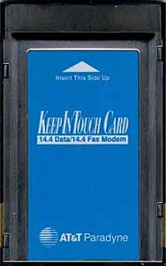
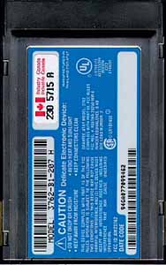
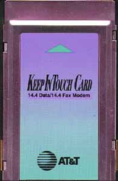
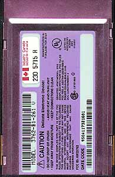

AT&T Paradyne KeepInTouch Modems
and the
Fujitsu Poqet PC Plus Handheld Computer
There are at least three different variations of the
AT&T Paradyne KeepInTouch
PCMCIA modem. It seems all of these variations
will actually work with the PC Plus but you must
upgrade the firmware on the modem first!
Many thanks to Danny Ayers for this information.
Danny generously took the time to test
the different variations of the
AT&T Paradyne KeepInTouch
modem on his PC Plus.
I include images of the front and back sides
of the three variations of the modem.
It should be noted here that a recent
fax from Fujitsu's Technical Support
mentions that the
AT&T Paradyne KeepInTouch PCMCIA modem
will work with the PC Plus.
Also,
some variations of the Megahertz XJ1144 modem
will work with the PC Plus.
| Variation |
Front |
Back |
| Variation 1 |

|

|
| Variation 2 |

|

|
| Variation 3 |

|

|
|